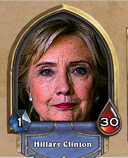
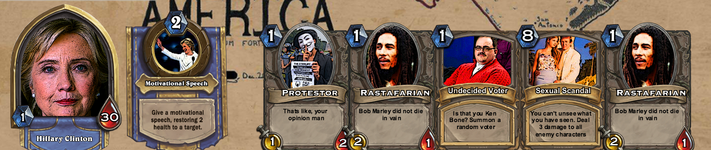
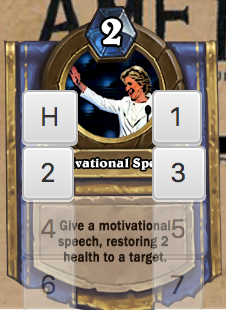
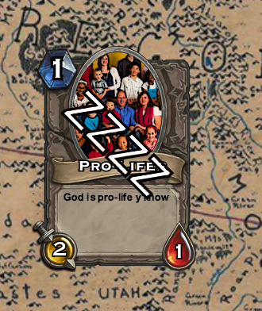

Game Guide¶
I was lying: this is much like Heartstone.

However, instead of Mages, Wizards and magical creatures, you play in the much wilder field of contemporary American Politics. With Hillary Clinton or Donald Trump as your hero, use your minions wisely to push the opponent out of the race.
{kind=link}
Select your party of choice, you will then be handed four cards. At the beginning of each turn, the game will draw a card for you. Then you will be able to play the cards in your hand by clicking on the Mana simbol, the diamond shaped cost on the upper part of the card. If your hero has enough Mana then you are allowed to play the card.
Each card has a Name, a description and a cost. Some of the cards have additional effects when they are played, discover these in the lower section of each creature card. The creature’s attack score is displayed on the sword shaped section, on the left corner of the card. The creature’s health score is displayed on the blood-drop-shaped section on the right corner of the card. If the card is a Spell card, its effect will be described on the lower part of the card.
{kind=link}
Each player has an extra power related to the Hero, the cost of this power is set to two Mana and its description is on the left bottom corner of the gameboard.
If the action needs a target, once you click on the card, it will prompt you to click on what you want to target. If your power is healing, the possible targets are your hero and your minions on the board. If, instead, you are about to attack, the possible targets are the opponent’s hero and the enemy minions.
{kind=link}
Once a card is played, it ends up on the floor. There, it will sleep (see example on the side) until the following round. At that point, you will be able to attack other creatures with it. Your attack score will be deducted from the health score of the attacked creature, or of the Hero, if you decided to target the Hero. However, if you attacked a creature, its attack score will also be deducted from your creature’s health score. So, play wisely! If any creature’s health score reaches zero, then the creature will die and it will be removed from the floor.
{kind=link}
When you do not have any more Mana to spend on playing cards, and when you have attacked as much as you would like to, press the End Turn button. The computer will play as your opponent. The actions he took will be displayed on the combat log on the left section of the game board.
The game ends when one of the Hero reaches zero health or when one of the players runs out of cards to play in his deck. In that case, the winner is the Hero with the highest Health Points.